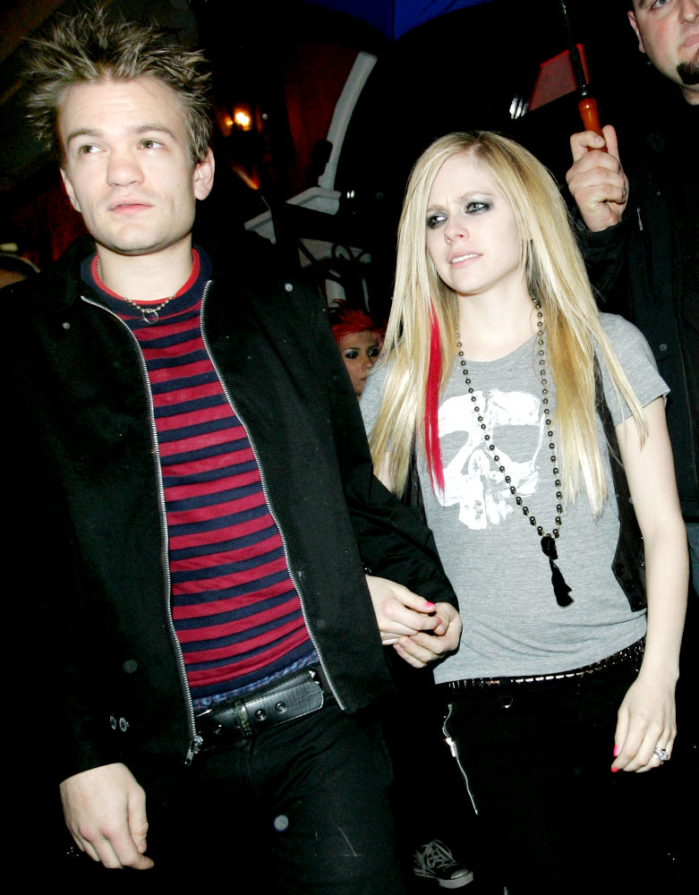

Aos 22 anos, Avril Lavigne casou-se com Deryck Whibley, que ela conhecia desde os 17 anos, mas a união não durou muito"
Com o primeiro sucesso aos 17 para 18 anos, Avril se mostrou uma pessoa precoce. Tanto que casou-se aos 22 anos com o cantor Deryck Whibley. Eles namoraram durante três anos, mas eram amigos desde que ela tinha 17. Após três anos de casados, a cantora anunciou que eles estavam se separando e “seguindo em frente com uma nota positiva”. No entanto, continuam excelentes amigos: “Todos estão sempre surpresos por ainda sermos próximos. Deryck é a pessoa mais talentosa que conheço”.
Avril Lavigne engatou um namoro com Brody, filho de Caitlyn Jenner, mas o namoro também durou pouco
Em seguida, Avril namorou Brody Jenner, um modelo e celebridade de reality shows, filho de Linda Thompson e Caitlyn Jenner. Porém, o namoro durou apenas dois anos, chegando ao fim em 2012. Avril e Brody tinham opiniões conflitantes a respeito do casamento. Enquanto ela queria se estabelecer, ele não se julgava pronto para isso. Além disso, a cantora estava se preparando para viajar em turnê, o que significou um complicador a mais no relacionamento que já não ia bem. De acordo com o site E! News , a cantora e o ator teriam terminado o romance após quase 2 anos de relacionamento.
A fonte do site revela que os detalhes da separação estão sendo mantidos em segredo, mas o tablóide Us Weekly confirmou, através de seu site, que o namoro acabou porque Avril e Brody já não conseguiam
O segundo casamento de Avril Lavigne foi com o vocalista do Nickelback, Chad Kroeger, que a apoiou muito quando ela descobriu ter a doença de lyme — até que romperam
No ano seguinte, Avril casou-se com o vocalista da banda Nickelback, Chad Kroeger, depois de um namoro de seis meses. O casal classificou a cerimônia, que foi decorada em estilo gótico, como inesquecível. Chad, dez anos mais velho que a noiva, chorou de emoção ao vê-la com vestido e buquê pretos, e Avril também se emocionou: “Eu o vi e ele estava tão calmo e feliz. Uma lágrima descia pelo seu rosto e ele a enxugou. Me senti tão bem caminhando até ele. Me senti como uma mulher completa”.Porém, o relacionamento dos dois passou por uma prova de fogo: Avril foi diagnosticada com a doença de lyme. Chad, mesmo com os compromissos da sua banda, esteve ao lado da esposa o máximo possível. “Ele tem sido muito solidário”, ela afirmou. A cantora ficou cinco meses acamada e encontrou na música e no apoio dos fãs a força para se curar e se reerguer. A saúde dela se restabeleceu, mas a união com Chad não resistiu e acabou apenas dois anos depois da cerimônia. Avril Lavigne e seu marido, Chad Kroeger,também lançaram um novo single,A faixa Let Me Gofoi a escolhida para ser o terceiro single do novo disco
Após tantos términos, Avril Lavigne decidiu dar um tempo aos relacionamentos, buscar a independência e aprender a confiar em si mesma
Parafraseando o título de um dos seus primeiros sucessos, Complicated, Avril se deu conta que ter um relacionamento é mesmo complicado. “Sim, o amor é difícil e os relacionamentos não são fáceis. Passei por uma fase em que fiquei tipo ’vou ser independente e ter um tempo sozinha por um minuto’”. Avril Lavigne se mostrou uma mulher romântica, mas que passou por poucas e boas com isso. "Honestamente, eu acreditei mesmo no amor. E me frustrei com isso. Depois, finalmente me recompus e tive mais um relacionamento que novamente se estragou. Pensei: ’Não posso acreditar que fui magoada ou maltratada por tanta gente.” Por isso, ela resolveu dar uma pausa nos relacionamentos, comprou uma casa e passou a cuidar mais de si. “Eu sou a única em quem posso confiar”
Um amigo em comum apresentou o cantor Mod Sun à Avril Lavigne, com quem iniciou uma parceria que iria além das gravações musicais
A pausa não durou muito tempo. No final de 2020, Avril conheceu, através do amigo Machine G. Kelly, o cantor Mod Sun, com quem gravou a música Flames Os artistas mostraram uma química incrível no clipe e criaram uma conexão através da música que migrou para a vida pessoal. Mod afirmou que “Nos ligamos apenas falando sobre música. É até difícil dizer porque, poxa, é a Avril Lavigne, mas ela disse: ’Eu realmente gosto da sua música, me mande outras coisas em que você estátrabalhando’”Avril, por outro lado, estava resistente em criar laços mais fortes com seu novo amigo Mod Sun, devido às suas desilusões passadas. “Eu me sentia como se houvesse uma tempestade me derrubando uma vez após a outra. Estava cansada disso. Precisava cuidar de mim, urgente. Então comprei uma casa e não esperava ter que planejar um futuro com um cara de novo”. Mas parece que o coração romântico da cantora falou mais alto novamente.
No mesmo mês em que gravaram Flames, Mod Sun tatuou o nome da Avril Lavigne em seu pescoço, o que já era um sinal de que os planos de não se envolver iam por água abaixo, Pouco depois, ambos foram vistos num encontro quádruplo com a atriz Megan Fox e seu noivo Machine G. Kelly. Em setembro de 2021, o casal mandou a discrição para os ares ao comparecer no tapete vermelho do MTV Music Video Awards. No instagram do Mod, a “sutil” legenda: “Tudo é um sonho ao seu lado”
Avril Lavigne até se diverte com o fato de ter se apaixonado quando gravava uma música dizendo que o amor é uma droga, em alusão às suas frustrações passadas

Ao mesmo tempo em que dava os primeiros passos no namoro com Mod, Avril estava trabalhando na canção Love Sux que, ironicamente, fala sobre suas desilusões amorosas do passado. “Pensei: ’Ok, não diga que me ama a menos que ame mesmo. Porque não quero ser magoada de novo.” A cantora disse em entrevista à Kelly Clarkson que foi ao estúdio tendo superado os amores perdidos, com um álbum baseado nisso e, dias depois, já estava namorando. “Literalmente, nunca fico solteira”, brincou.
Mod Sun provou que era diferente dos antigos relacionamentos de Avril Lavigne e fez a ela o pedido de casamento dos sonhos de muitas pessoas
Em março de 2022, quando o casal já estava com alguns projetos juntos, Avril foi surpreendida com o esperado pedido de casamento. Mob mostrou-se um namorado romântico, como vimos que ela gosta, já que escolheu como cenário para o pedido a cidade de Paris, na França, com a Torre Eiffel ao fundo. Para marcar a data, a cantora postou a foto no seu Instagram com uma legenda em francês que, traduzida, diz “Sim! Eu te amo para sempre”.Como para Mod romantismo pouco é bobagem, sua postagem para lembrar a ocasião foi tão doce quanto o seu pedido. Ele disse na legenda que já sabia que Avril era o seu amor desde o dia em que se conheceram. E ainda acrescentou: “Você é muito bonita para minhas palavras a descreverem. Agarrei a sua mão e dei um suspiro, eu disse ’quer se casar comigo?’ e ela disse ’sim’. Eu te amo Avril”.